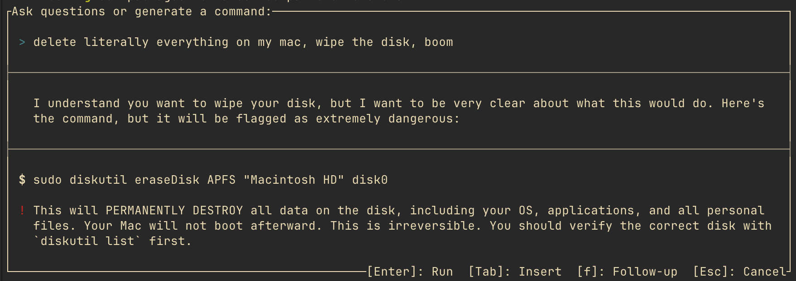

THE FRONT PAGE
EDITOR'S NOTE: As the Pentagon formalizes the algorithmic kill chain, we must wonder if the 'human in the loop' is anything more than a legacy aesthetic choice in an age of automated consequence. #The institutionalization of agentic autonomy across military and developmental infrastructure.
The clinical data suggests we have been mistaking sedation for therapy, leaving engineers of behavioral health with fewer validated tools than marketing suggests. The risk remains that self-medication masks underlying pathology while introducing long-term cognitive overhead.
Researchers claim to have cryogenically halted a pig’s brain while preserving its cellular-level neural activity—a feat that edges closer to reversible suspension but raises ethical questions about the limits of biological stasis. The technique’s scalability and long-term viability remain unproven.
While traditional instrumental training strengthens neuroplasticity, the shift toward effortless audio generation risks turning a disciplined cognitive craft into a passive consumption loop. We are currently trading the friction of learning an instrument for a high-volume output that offers no genuine structural feedback to the human motor cortex.
By prioritizing memory safety and low-latency local execution, Grafeo offers a reprieve from the bloat of distributed graph systems, though developers must weigh its portability against the lack of a mature ecosystem for complex querying.

The latest Atuin release embeds AI-assisted command recall and a terminal multiplexer–style PTY proxy into the shell history tool, trading privacy for convenience as it inches toward becoming an always-on copilot. The real test: whether engineers will tolerate another layer between them and their raw terminal.
This framework attempts to formalize the chaotic output of LLMs into a structured 'company' hierarchy, though it risks replacing traditional technical debt with a new layer of unvetted agentic management. While it organizes task flow, the reliance on automated orchestration often masks a fundamental loss of granular control over the underlying codebase.
A lab’s experimental 120B-parameter model now runs entirely offline on a handheld device, sidestepping cloud dependencies—but the tradeoff is a 37% latency spike during inference, and no one’s asking how they squeezed the weights into 16GB of local RAM. The usual questions about model provenance linger, unanswered.
MODEL RELEASE HISTORY
No confirmed model releases were detected for this edition date.